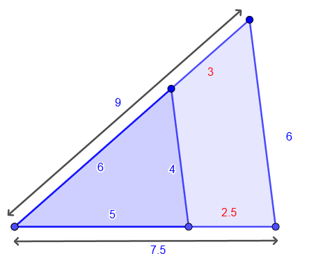
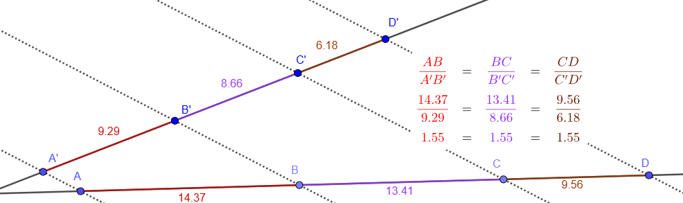

Fixa't en el següent triangle:

En aquest triangle ja està tot calculat. El triangle petit té costats 5, 4 i 6, i el gran, en el mateix ordre, 7.5, 6 i 9. Els triangles comparteixen el vèrtex esquerre i el costats oposats són paral·lels, així que estan en posició de Tales i per tant són semblants. També ho podem comprovar calculant la raó de semblança:
\[ r = \frac{7.5}{5}= \frac{6}{4}= \frac{9}{6}=1.5 \]
És a dir, que el triangle gran és 1.5 vegades més gran que el petit.
Però, imagino que a hores d'ara, tothom haurà vist dos nombres en vermell que fins ara no havíem escrit. Perquè hi són? Provem de dividir-los! Per provar, farem el que ha quedat al damunt entre el que ha quedat al davall.
\[= \frac{3}{2.5}=1.2\]
Oh, vaja. No surt la mateixa raó. Hauria estat bé. Però bè, ja que hi som, anem a dividir alguns més.
\[= \frac{6}{5}=1.2\]
Ostres, tú! Un altre 1.2! I si els agafo els dos junts?
\[= \frac{9}{6}=1.2\]
Què ha passat, però la raó no era 1.5? Efectivament, la raó entre els triangles és 1.5, però ara no estem dividint els triangles, estem dividint els segments (els de la recta del damunt, entre els de la recta del davall). Aquest és el (primer) Teorema de Tales:
|
Si dues rectes qualssevol es tallen per dues o més rectes paral·leles, els segments d'una de les rectes són proporcionals als segments corresponents a l'altra  |
Fixa't que això vol dir que els segments del damunt i el davall (vermell amb vermell, lila amb lila i marró amb marró) són proporcionals entre ells. Però nosaltres sabem, que si les dues rectes arribessin a tocar-se, formarien molts de triangles que també serien proporcionals. Què vol dir això?
Que amb Tales, hi ha moltíssims segments que poden ser proporcionals entre ells. Però no sempre amb la mateixa raó. La idea, per tant, és ser organitzats. Que vull dividir base entre altura? Puc fer-ho, però després hauré de dividir altra vegada base entre altura. Que vull fer base de la figura gran entre base de la petita? Cap problema, sempre i quan després divideixi altura de la gran entre altura de la petita. Sempre en el mateix ordre.
L'avantatge d'aquest teorema (que realment és el primer, nosaltres els hem fet de manera contrària a com es van dir originalment), és que no ens fa falta tenir el triangle sencer, basta veure que les rectes són paral·leles.